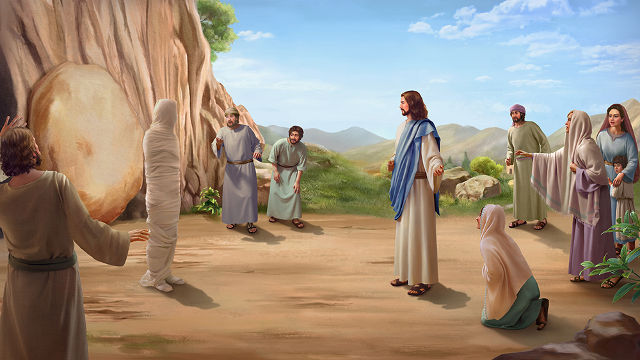
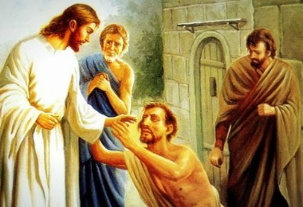

 38 Jesus, profundamente conmovido otra vez, vino al sepulcro. Era una cueva, y tenia una piedra puesta encima.
39 Dijo Jesus: Quitad la piedra. Marta, la hermana del que habia muerto, le dijo: Señor, hiede ya, porque es de cuatro dias.
40 Jesus le dijo: ¿No te he dicho que si crees, veras la gloria de Dios?
41 Entonces quitaron la piedra de donde habia sido puesto el muerto. Y Jesus, alzando los ojos a lo alto, dijo: Padre, gracias te doy por haberme oido.
42 Yo sabia que siempre me oyes; pero lo dije por causa de la multitud que esta alrededor, para que crean que tu me has enviado.
43 Y habiendo dicho esto, clamo a gran voz: ¡Lazaro, ven fuera!
44 Y el que habia muerto salio, atadas las manos y los pies con vendas, y el rostro envuelto en un sudario. Jesus les dijo: Desatadle, y dejadle ir.
 8. 1 Cuando descendio Jesús del monte, le seguia mucha gente.
2 Y he aqui vino un leproso y se postro ante el, diciendo: Señor, si quieres, puedes limpiarme.
3 Jesus extendio la mano y le toco, diciendo: Quiero; se limpio. Y al instante su lepra desaparecio.
4 Entonces Jesus le dijo: Mira, no lo digas a nadie; sino ve, muestrate al sacerdote, y presenta la ofrenda que ordeno Moises, para testimonio a ellos.
| Los milagros mas impactantes | Otros milagros de Jesus |
|---|---|
| Convertir el agua en vino | Liberacion del endemoniado en la sinagoga |
| La multiplicacion de los panes y peces | Curacion de la suegra de Simon |
| Caminar sobre el agua | Resurreccion de la hija de Jairo |
| Jesus calma la tempestad | Curacion del el ciego de Jerico |
| La resurreccion de Lázaro | Liberacion de el endemoniado epileptico |
| Sano a un leproso | Curacion de un tartamudo sordo |